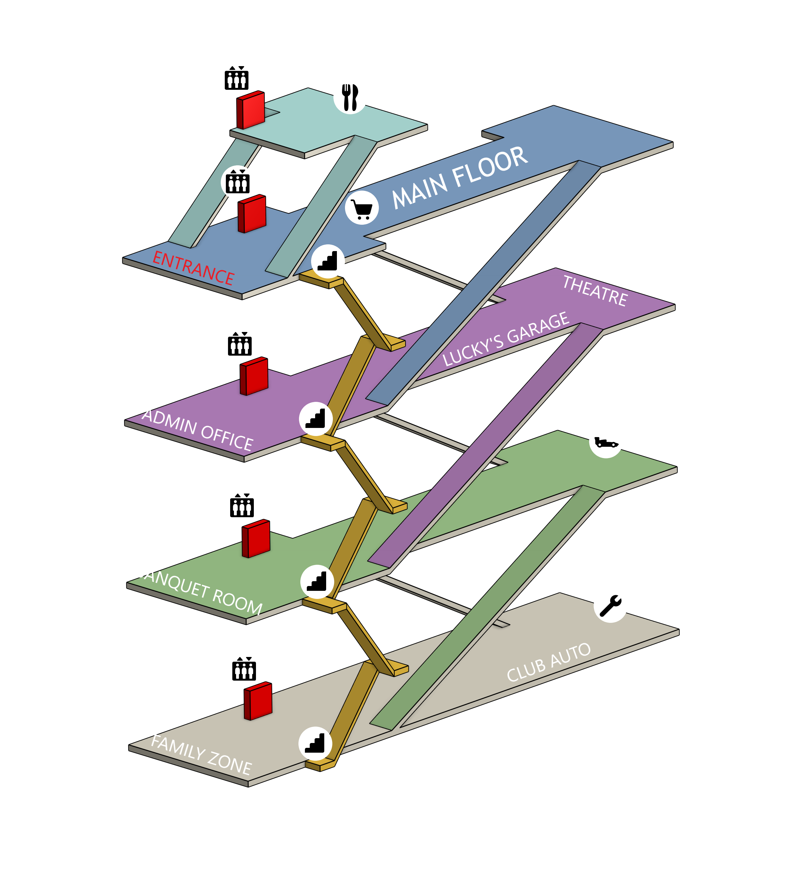
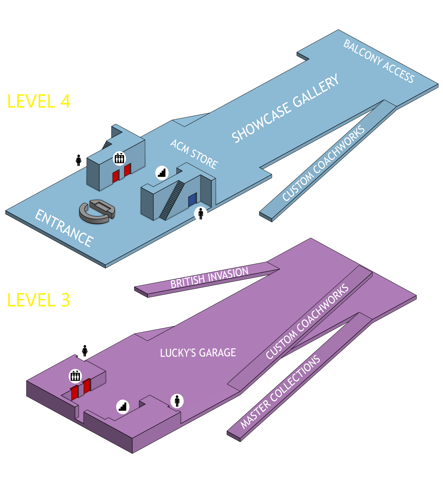
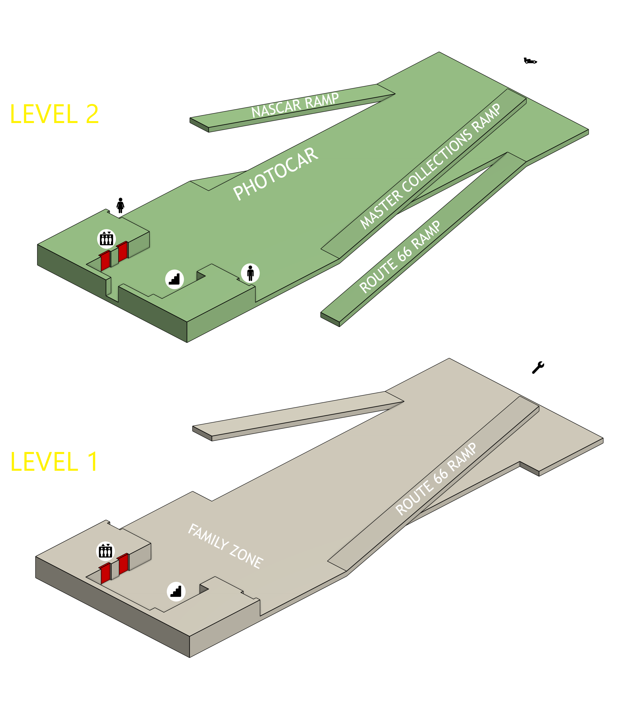

Explore the Museum with the help of these maps.
Utilize the buttons below to locate each exhibit and attraction.
SWIPE below to view different maps




Map Key

TIP
Experience our museum's remarkable car collection by exploring the building like a parking garage. Walk through each floor, taking the right-side ramps. Once you reach the NAPA auto center on the bottom floor, circle upwards using the left ramps.
Each ramp is a specially themed exhibit, avoid elevators & stairs to ensure you don't miss any cars.